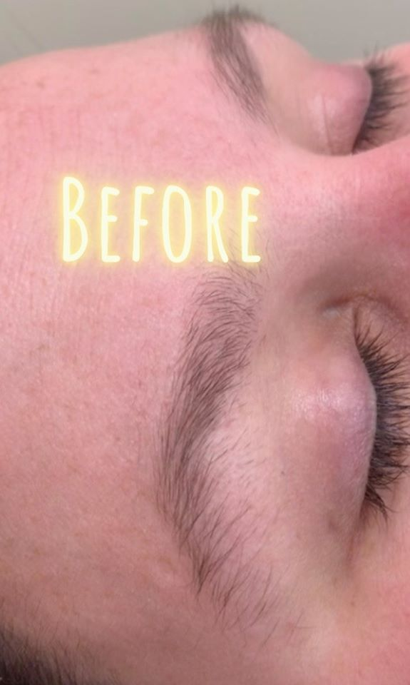
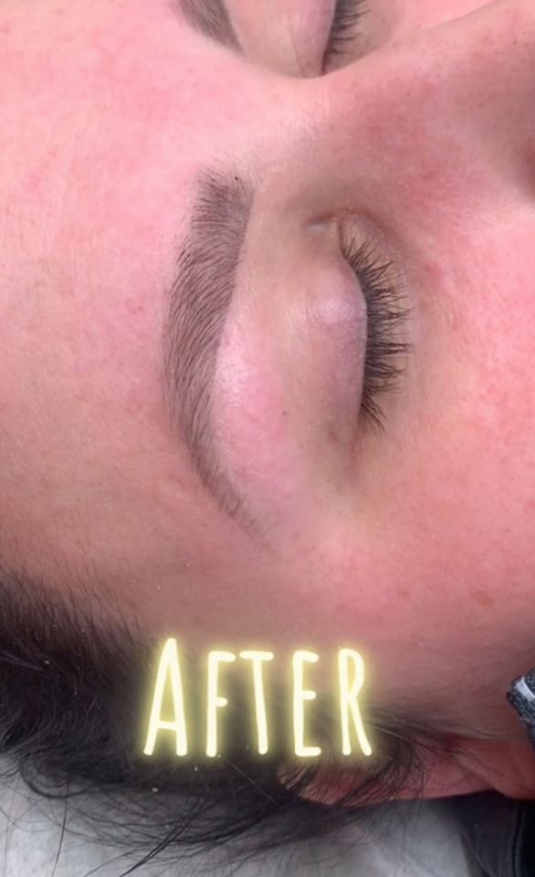
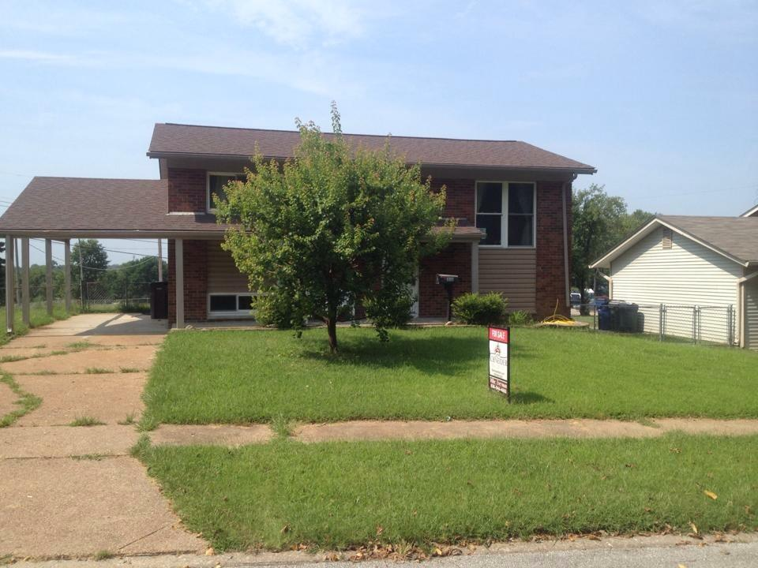

My Journey to LaunchCode
From my first memory of someone asking me what I wanted to be when I grew up, my answer was that I wanted to do something where I could support myself and not have to rely on a significant other or family. So when I entered the age of 17 (I graduated 1 year early from high school) and the time had come for me to choose what to go to school for, I chose the school I could afford to pay upfront in cash, at that time it was a trade school in esthetics. By 18 years old I was ready begin my career doing facials, peels, waxing and other beauty treatments. I was excited and just as quickly as it began my new career came crashing down as the collapse of the economy happened in 2008. No one was spending money on luxury services anymore when people were losing their homes.
This prompted an opportunity to work in the healthcare field, where I could work as many hours of overtime as possible to pay for another college education, it was time for me to go back to school. I decided to get a bachelors in social work and psychology. The thought of promoting social justice and helping people was both exciting and inspiring to me. So the spent the next few years commuting from over an hour away to UMSL(the least expensive 4 year school I could find but still experienced a wonderful education there).
My internships in that field exposed me to working with diverse populations. I was good at it, I enjoyed it, and I was an effective communicator thats enjoyed actively listening and helping people. But of course, there was a downfall. I remember when I was finishing my degrees my mom warned me that most of the jobs I’d be offered would only pay $30,000 a year. “$30,000?!”, my $9 an hour making very young mind thought to myself, “I’m going to be rich!”. I found out very quickly that it was not a lot of money and I had to get a second job back in the esthetics field (which just happened to be when the economy was recovered from the recession) to support myself.
Not long after working both jobs I was bringing a lot more income in from the esthetics field than with my other degrees and decided to take on esthetics full time even though I loved the social work field as well. One of my favorite services to perform was waxing eyebrows.
 
That decision allowed me to buy this humble home at 26 years old by myself and be able to pay off my student loans. Yet again, there was a catch. To make what I wanted I had to work 60 hours a week with no health insurance, paid time off, 401k, or any other benefits. There was zero work life balance for me and physically, it was wearing down my body. This time, I really had to think this through all the way. I had all these skills but nothing that quite fit into the life I wanted for myself.

There were 5 main factors I thought about when making my decision as to what career to go into:
- What could I afford?
- How much schooling would it require?
- What is the average salary in the field and do the companies hiring in the field offer benefits?
- What does the job availabilty look like in the area that I live?
- Will I enjoy it long term?
After a lot of research I decided to enroll back to college this time for a degree in IT Management.The further along I got into my education I realized how important it was going to be for mean to learn how to code. I was partly discouraged at this point because I figured that would cost more money and I was already working 60 hours a week on top of being a full time student, I couldn’t work any more to pay for anything else. Luckily, I wax a lot of women that work in the IT field and were excited I was wanting to get into coding and heavily encouraged me to start LaunchCode. I was excited to find a program that was free and was going to teach me a lot of skills I needed to work in this new field I had no experience with.
This journey has been long and exhausting getting to this point. And a lot of times I’m very overwhelmed and confused, but there is not a doubt in my mind that this will all be worth it in the end.